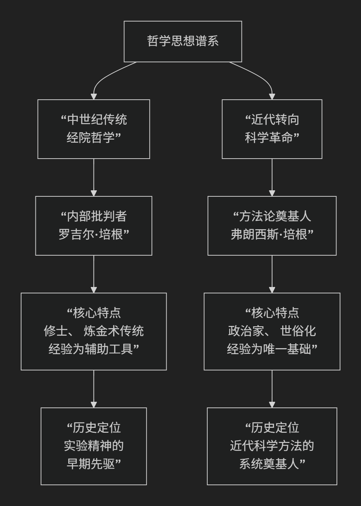

compare
两个培根（Bacon）
这是一个非常经典的问题。罗吉尔·培根和弗朗西斯·培根两位哲学家虽然名字相近，且都强调经验和方法论，但他们是生活在完全不同时代的两位思想家，其思想背景、核心目标和历史角色有着根本性的区别。
他们的主要差异可以通过下表清晰地呈现：
对比维度 |
罗吉尔·培根 |
弗朗西斯·培根 |
|---|---|---|
所处时代 |
13世纪（约1214-1292），中世纪鼎盛期 |
16-17世纪（1561-1626），文艺复兴末期/科学革命前夜 |
身份背景 |
方济各会修士，神学家，炼金术士 |
政治家，大法官，散文家，哲学家 |
核心著作 |
《大著作》、《小著作》、《第三著作》 |
《新工具》、《学术的进展》、《新大西岛》 |
思想背景 |
经院哲学内部的批判与革新，深受奥古斯丁传统影响 |
彻底反对经院哲学，旨在构建全新的知识体系 |
核心方法论 |
强调“实验科学”，但将其置于数学、语言学等学科之中，并未系统化 |
系统提出“归纳法”，作为取代亚里士多德三段论的新工具 |
经验的角色 |
经验（尤其是主动实验）是验证推理、发现新知的关键手段 |
经验（系统收集的事实）是所有知识的唯一基础，推理必须建立在之上 |
科学的目的 |
服务于神学：理解上帝创造的自然，也为教会和社会服务（如历法改革） |
为人类谋福利：知识即力量，旨在征服自然，改善人类生活条件 |
对传统的态度 |
批判性地利用传统（如阿拉伯科学、亚里士多德），但仍尊重权威框架 |
激进地批判和决裂，提出“四假象说”系统清算一切认知偏见 |
历史角色与影响 |
孤独的先知：思想远超时代，但被埋没，是实验精神的早期先驱 |
时代的吹号人：为即将到来的科学革命提供了方法论宣言，直接影响皇家学会 |
为了更直观地把握两者在思想传承上的根本不同，下图展示了他们分别所属的思想脉络及其核心贡献：

核心区别的深入解析
1. 时代与思想背景的根本不同
罗吉尔·培根身处中世纪。他的思考框架仍然是神学中心论的。他批判经院哲学的繁琐，目的是为了更有效地服务于神学，更好地理解上帝的创造。他的思想是经院哲学内部的“异类”和改革者。
弗朗西斯·培根身处文艺复兴末期，现代科学即将诞生。他的目标是与古典和中世纪的传统彻底决裂。他旗帜鲜明地反对经院哲学，认为它是徒劳无益的，试图建立一套全新的、世俗化的知识体系。
2. 方法论的精密程度与系统性不同
罗吉尔·培根的伟大在于他前瞻性地强调了“实验”的重要性，并提出了“实验科学”的概念。但他并没有提供一套系统、可操作的方法论程序。他的思想更像是一系列充满洞见的宣言和呼吁。
弗朗西斯·培根的核心贡献在于他系统化地提出了以“归纳法”为核心的科学方法论。他著名的 “三表法”（存在表、缺如表、程度表）旨在通过系统收集和比较正反事例，逐步排除偶然因素，发现事物的本质形式（规律）。这是他提出的“新工具”，以取代亚里士多德的“旧工具”（演绎逻辑）。
3. 对“经验”的理解深度不同
罗吉尔·培根强调的经验，更多指的是个人的观察和主动的干预性实验，用于验证理论和发现新现象。它仍然是获取知识的一种重要“手段”。
弗朗西斯·培根将经验提升到了本体论和基础地位。他认为所有知识必须从感官经验开始，通过系统化的归纳逐步上升为公理。他更关注如何集体地、系统地收集和整理经验事实（“自然史”），作为科学大厦的基石。
4. 哲学目标的世俗化转向
罗吉尔·培根的最终目的带有中世纪色彩：荣耀上帝，服务教会。
弗朗西斯·培根的口号 “知识就是力量” 体现了完全不同的现代精神：知识的目的是为了增强人类的能力，征服自然，创造理想社会。他的《新大西岛》描绘了一个由科学家主导的乌托邦“本色列”，体现了其科学造福人类的世俗理想。
一个简明的总结
可以这样概括他们的关系：
罗吉尔·培根 是 “实验科学的预言家”。他在中世纪的黑夜里，远远地看到了未来科学方法的星光，并发出了孤独而勇敢的呼喊。
弗朗西斯·培根 是 “科学方法的工程师”。他在黎明时分，为即将到来的科学革命设计了一套详细的蓝图和施工方案。
他们都是科学思想史上的巨人，但弗朗西斯·培根因其思想的系统性、世俗性和对科学共同体的直接影响，而被普遍视为“近代实验科学之父”。而罗吉尔·培根则是一位值得尊敬的、生不逢时的伟大先驱。